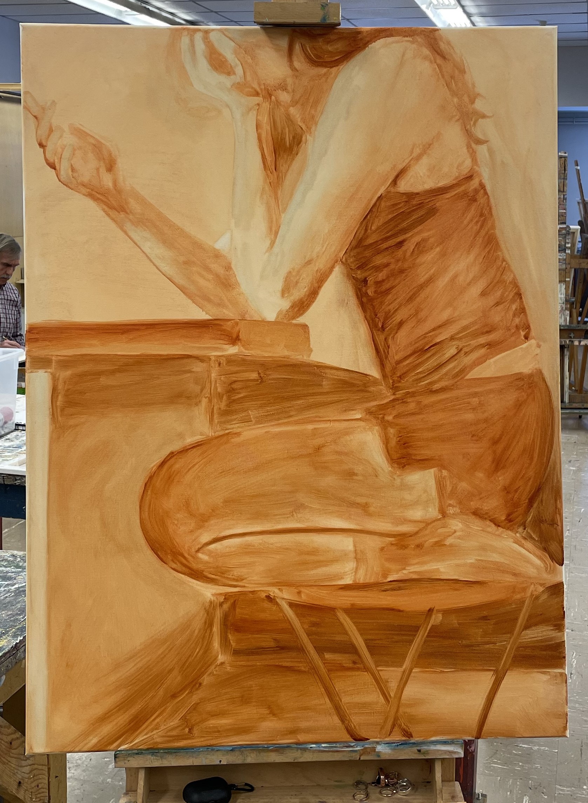
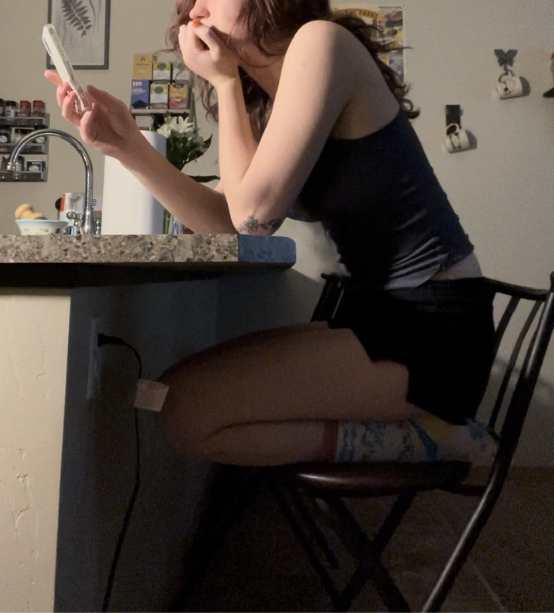

Paint a very thin layer of burnt sienna over the entire canvas. If you are using oil paint, use lots of gamsol to thin your paint down. Use a rag to spread the paint faster and give a more even finish. This layer should still be very light, but there should still be a difference between the blank canvas and the final tone.
Still using only burnt sienna and a rag, lay down the basic shadows and highlights of the painting. At this point, it should look something like this:
Keeping in mind that this is the reference photo:
